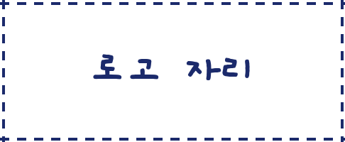

한국 혁신 순위
10위→4위
세계 혁신지수, 7년의 기록
이게 뭐냐면
글로벌 혁신지수
세계지식재산기구(WIPO)가
매년 발표하는 나라별 혁신 순위
2026년 · 139개국 평가
2020년, 10위
2021년, 5위로 껑충
2022년, 6위
2023년, 다시 10위
2024년, 6위로 반등
2025년, 처음 4위!
2026년, 연속 4위
출처 · WIPO 글로벌 혁신지수
한국 위엔 세 나라뿐
2026년 순위
1위스위스
2위스웨덴
3위미국
4위대한민국
한국이 특히 강한 곳
2026년 기준
2026년 기준
인적자본·연구
8년 연속 1위
창의적 산출
세계 2위
다음 목표는 3위?
여러분 생각은? 댓글로!

@thepoliticsjam
출처 · WIPO 글로벌 혁신지수